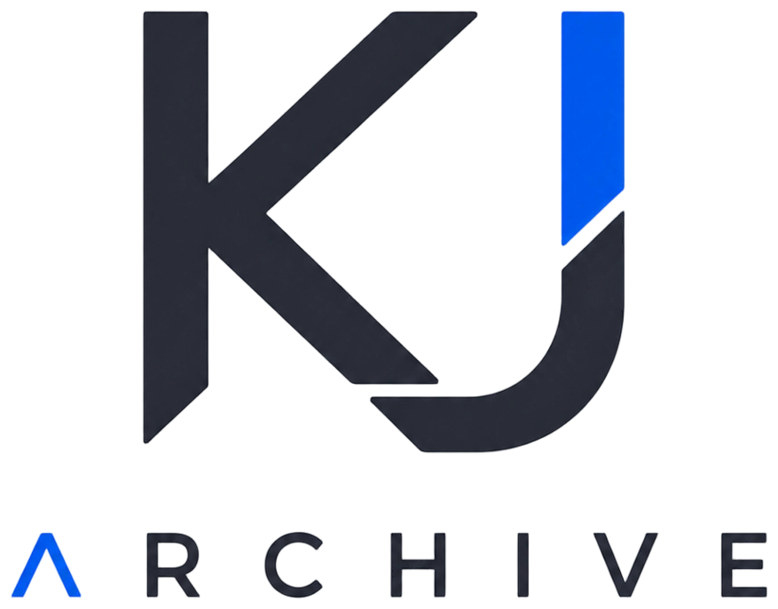
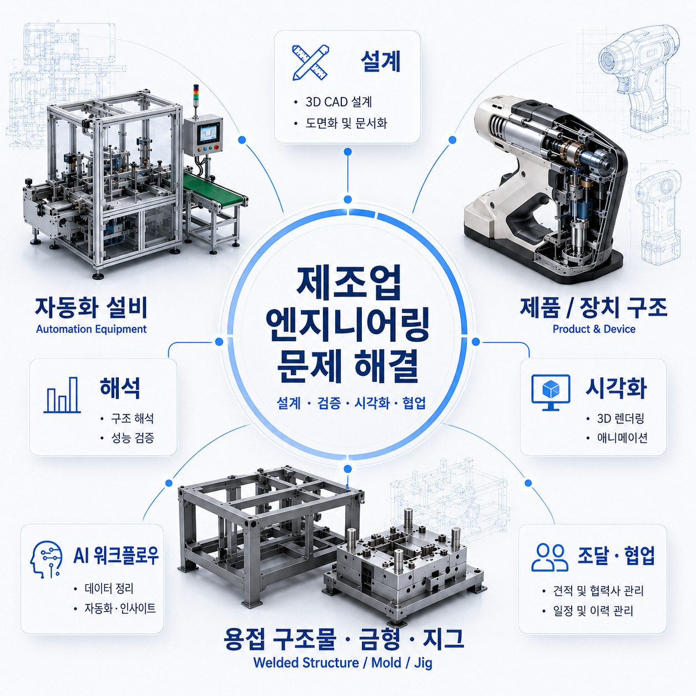

김민준
기계설계 · CAE · 시각화 · 중국 소싱 · 프로젝트 조율 · AI 워크플로우
한양대학교 ERICA · 기계공학 학사
경기 / 서울권
kmz182113@gmail.com
연락하기제조업 엔지니어링 통합형 인재
제조업 현장의 문제를 설계, 해석, 시각화, 구매, 협업의 흐름 속에서 바라봅니다. 기계설계와 CAE 해석을 기반으로 구조와 성능, 제작 가능성을 검토하고, 산업장비 3D 시각화를 통해 복잡한 기술 내용을 명확하게 전달합니다. 중국 공급업체 커뮤니케이션과 구매, 프로젝트 조율 경험을 바탕으로 엔지니어링 결과가 실제 실행으로 이어지는 과정을 이해하며, 현재는 AI 프로세스를 기계 엔지니어링 영역에 접목하는 방향을 꾸준히 탐구하고 있습니다.

기계설계 · CAE · 시각화 · 중국 소싱 · 프로젝트 조율 · AI 워크플로우
한양대학교 ERICA · 기계공학 학사
경기 / 서울권
kmz182113@gmail.comAbout Me
저는 단일 기술을 보여주는 것보다 제품과 장비의 아이디어, 구조 설계, CAE 검증, 3D 시각화, 자료 정리, 공급업체 커뮤니케이션, AI 도구를 어떻게 연결해 복잡한 프로젝트를 더 명확하고 추진 가능하며 재사용 가능한 형태로 만드는지에 관심이 있습니다.
Selected Skill
제품과 산업장비의 구조를 이해하고, 기능 요구사항을 바탕으로 3D 모델링, 조립 관계, 도면화, 제작 가능성을 고려한 설계 방향을 정리합니다.
정적 해석, 과도 해석, 피로 해석, 모달 해석을 중심으로 구조적 리스크를 검토하며, 일부 CFD와 열해석 경험을 바탕으로 설계 검증 관점을 확장하고 있습니다.
복잡한 장비 구조와 작동 흐름을 3D 이미지, 설명 자료, 영상 기반 콘텐츠로 정리해 기술 내용을 더 직관적으로 전달합니다.
중국 공급업체 조사, 견적 비교, 사양 확인, 일정 조율을 통해 설계 아이디어가 실제 제작과 구매 단계로 이어질 수 있도록 지원합니다.
현재 가장 집중해서 탐구하는 방향은 AI를 기계공학 업무 프로세스에 적용하는 것입니다. 설계 자료 정리, 해석 결과 설명, 문서화, 지식 축적, 반복 업무 자동화 가능성을 실험하고 있습니다.
개인 역량과 별도로, 용접 구조물 제작 경험을 가진 외부 협력 자원을 바탕으로 간단한 제작 의뢰와 소규모 실행 가능성을 검토하고 있습니다.
Engineering Toolbox
모든 프로젝트가 같은 순서로 진행되지는 않습니다. 먼저 문제와 제약을 이해하고, 상황에 맞는 엔지니어링 도구를 선택해 조합하면서 프로젝트를 앞으로 밀어냅니다.
고정된 순서보다 중요한 것은 문제에 맞는 도구 선택과, 결과가 다음 실행으로 이어지게 만드는 연결입니다.
Research Direction
AI는 기계공학 업무에서 먼저 정보 정리 단계에 가장 현실적으로 들어온다고 생각합니다. 사람이 자연어로 요청하고, AI가 정보를 이해하고 구조화하며, 필요한 파일과 문서로 출력하는 흐름을 탐색하고 있습니다.
사람이 말로 지시
정보 이해·구조화
문서 생성·저장
자연어 입력으로 보고서 정리
필요 정보 정리 후 문서 생성
부품 정보를 목적에 맞게 정리
회의 내용과 작업 이슈를 구조화
Let's Connect
기계설계, CAE 해석, 산업장비 시각화, AI 워크플로우에 관심이 있다면 편하게 연락해 주세요. 같은 방향을 고민하는 사람들과 아이디어를 나누고 함께 성장하고 싶습니다.